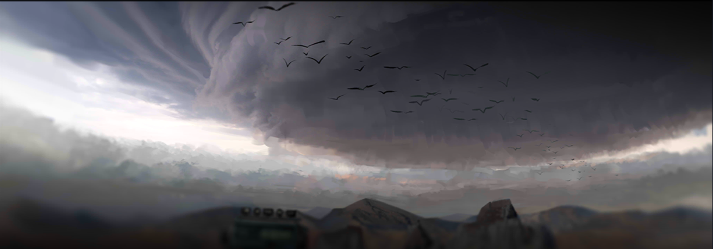
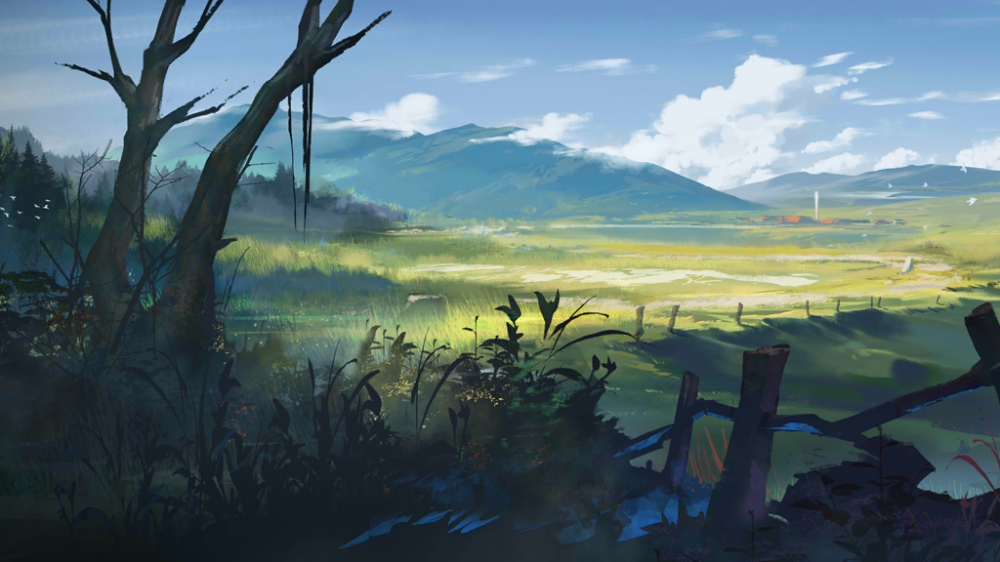

Latar belakang

Dunia Terra mirip, jika tidak identik, dengan Bumi kita, termasuk memiliki atmosfer oksigen, gravitasi dan tekanan
atmosfer yang kurang lebih identik, dan bentuk kehidupan berbasis karbon; bahkan manusia dari dunia kita tidak akan
memiliki masalah untuk hidup di dalamnya jika mereka entah bagaimana dibawa ke Terra. Begitu pula penduduknya dinamakan Terran atau Terranian. Namun, apa yang membedakan
Terra dari dunia kita adalah Bencana-bencana alam dahsyat yang memaksa sebagian besar Terra untuk mengadopsi cara
hidup nomaden melalui kota-kota nomaden alih-alih yang menetap. Zat kristal yang dikenal sebagai Originium tertinggal di
lokasi Bencana dan digunakan secara luas sebagai sumber energi dan katalis untuk Seni Originium yang mirip sihir. Tetapi
pada saat yang sama, ia mampu menyebabkan penyakit terminal yang dikenal sebagai Oripathy dari paparan langsung atau
berkepanjangan yang bertanggung jawab atas sebagian besar suasana Arknight yang begitu suram.
Geografis

Selama event yang berlangsung pada game Arknights, Terra masih belum banyak terbahas atau tereksplor. Area yang dipetakan ini mencakup berbagai daratan dengan bioma yang berbeda-beda. Daratannya banyak ditutupi oleh gurun kering. Namun beberapa tempat dipenuhi oleh hutan, padang rumput yang subur, dan hutan tropis yang cocok untuk dibangun pemukiman. Begitu juga dengan pegunungan ditemukan di berbagai bagian Terra seperti Kjerag dan perbatasan antara Kazimierz dan eksklave Ursus. Laut pedalaman raksasa terletak di antara Victoria selatan dan semenanjung tempat Siesta berada. Sejauh ini, sangat sedikit informasi yang diberikan mengenai "great beyond" Terra dengan dua wilayah yang bertindak sebagai perbatasan antara dunia beradab Terra dan terra incognita: Foehn Hotlands di Sargon dan Northland di Sami dan Ursus. Selain itu, garis pantai selatan Iberia dan Yan, utara Bolívar, dan timur Higashi mengarah ke lautan luas yang belum dijelajahi; Aegir terletak di suatu tempat di selatan garis pantai Iberia. Karena isolasi geografis yang canggung dan status terkurung daratan di sebagian besar negara, konsep lautan asing bagi
sebagian besar non-Aegir Terrans.
Negara
Adapun beberapa negara yang berdiri di Terra yakni :